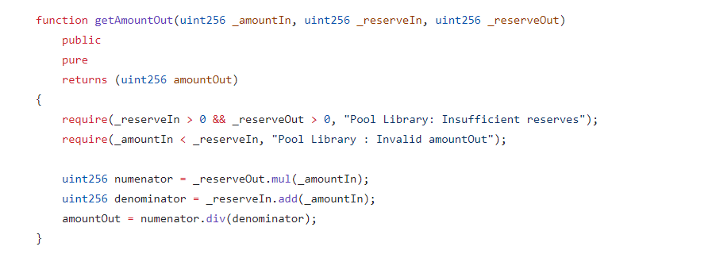
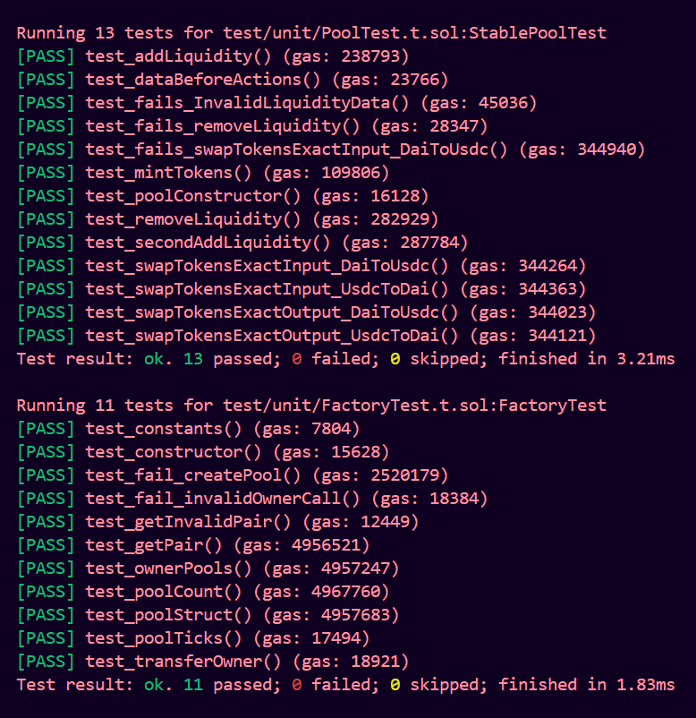

>> RCR-swap
Hello WEB3, In this blog series, we embark on a journey through the RCR-Swap, which is a Decentralized Exchange platform, which works on Constant Product Automated Market Maker(CPAMM) formula. Any user can interact with the Factory contract and create a pool with a initial liquidity locked in pool to avoid Inflation attack. For any two indentical tokens we can create nearly 200 pools with different fees receiving for the liquidity providers.
- Liquidity Providers(LP's) can able to add liquidity and remove liquidity and earn the fees paid by the user while swapping the tokens.
- User select the pool for which two tokens they are swapping. Its a static pool that means if user wants to swap two tokens then it's mandatory that there have to exist of pool.
- I didn't implement Multi Hop swap in this DEX.
- The protocol fees was set at initial creating of pool by the pool creator.
- For any pool creation at first adding liquidity we lock some(1000) liquidity in pool for permenently to avoid Inflation attack.
- In this DEX I have introduce a concept called TICK, which is used to swap the tokens in only certain range of amount.
- These Tick values is set by the Factory owner.
- I have used ERC-4626 concept to mint and burn shares of LP tokens to Liquidity Providers while adding and remove liquidity respectively.
- I have used a Pool Library contract to do some calculations reguarding to the pool. By using a library helps to reduec gas while making transactions on the pool.
- I have return all different test like Static, Fuzz, Invariant testing on the RCR-swap.
- I have used static analysis tools like slither to analyze the smart contracts.
I recommend to go through the ethereum101, solidity 101, solidity 201 modules of the Secureum bootcamp and some defi protocols like Uniswap V2 Which help us to build this DEX.
Clone the repo :
>> Repository Structure
- src
- interfaces
- IERC20.sol
- IFactory.sol
- IPool.sol
- libraries
- PoolLibrary.sol
- SafeCast.sol
- SafeMath.sol
- utils
- Ownable.sol
- ReentrancyGuard.sol
- Factory.sol
- LP_ERC20.sol
- Pool.sol
- test
- fuzz
- PoolLibraryTest.t.sol
- helper
- ERC20.sol
- IERC20.sol
- PoolLibrary.sol
- invariant
- Handler.t.sol
- MultiHandler.t.sol
- unit
- FactoryTest.t.sol
- PoolTest.t.sol
>> Libraries
In this src folder we written 3 libraries which helps to make smart contract development more efficient, modular, and secure. These libraries makes code Reusability and gas efficient.
- SafeCast.sol
- SafeMath.sol
- PoolLibrary.sol
>> SafeCast.sol
This library is uesd to cast the numbers safely by avoiding arithmetic underflow and overflow conditions from uint256 to int256 and vice versa.
>> Functions
- toInt256() : Converts unsigned int data type numbers to signed data types.
- toUnit256() : Converts signed int data type numbers to unsigned data types
>> SafeMath.sol
This library is used to make some calculations easily without any arithmetic underflow and overflow conditions.
>> Functions
- add() : return the sum of two signed and unsigned numbers.
- sub() : return the difference of two signed and unsigned numbers.
- mul() : return the multiplicaton of two unsigned numbers.
- div() : return the division of two unsigned numbers.
- mod() : return the modules of two unsigned numbers.
- max() : return the maximun of two unsigned numbers.
- min() : return the minimum of two unsigned numbers.
- average() : return the average of two unsigned numbers.
- sqrt() : return the square root of unsigned number.
- log2() : return the logorithmic value of unsigned number with base 2
- log10() : return the logorithmic value of unsigned number with base 10
>> PoolLibrary.sol
Pool Library are vital for extending and simplifying interactions with the DEX. They provide essential functions for adding and removing liquidity, swapping tokens, and more, while ensuring efficiency, security, and ease of use for developers and users alike. By leveraging these libraries, developers can build robust and user-friendly decentralized applications that integrate seamlessly with the ecosystem.
>> Functions
This function is used to determine the amount of one token that is equivalent to a given amount of another token, based on the reserves of the two tokens in the liquidity pool. This function is essential for understanding how much output you will receive for a given input amount when swapping tokens or adding liquidity.
This function is used to calculate the output amount of one token given an input amount of another token according to the constant product formula(CPAMM). 
This function is used to calculate the amount of input tokens required to obtain a specified amount
of output tokens when performing a swap. This function is crucial for determining how many tokens
you need to provide to receive a desired amount of another token from a liquidity pool.

This function is used to fetch the current price of a token pair within a liquidity pool. Understanding the price dynamics in a pool is crucial for various activities such as trading, arbitrage, and liquidity provision.
The function is used to return the range of values, where user have to swap the tokens within that
range, this is used to maintain the pool prices. It helps from price oracle attacks on pool.
This function is used to get the amount of fee for the given desired input of token amount.
>> Factory
In the Factory smart contract any user can create a pool with any two ERC-20 supporting tokens with different prices from 0.01% to 1% as protocol fees. These fees are fully distributed to Liquidity Providers with respectively to that pool. Distribution of fees is based on the amount of shares that the Liquidity Provides have on that pool.
Factory have Owner who control the factory functions like setting TICK values. More TICK have able to swap tokens in more range. Factory uses safeMath library for calculations safely without any arithemtic issues.
>> Events in Factory
Facory contract has singel Event, it Emits evvery time whenever a New Pool is created.
event PairCreated(
uint256 indexed poolCount,
address token0,
address token1,
address indexed pair,
uint256 fee,
uint256 tick,
address createdBy
);
>> Functions
This function is used to create a new pool with two ERC-20 tokens. It takes two ERC-20 tokens and fee as the parameters. All the pools are tracked through a s_poolCount state variable.
setTick function is used to set the tick values and it is called by the owner only.
This function is used to transfer the Factory ownership to another address.
- function getOwnerPools(address _owner) external view returns (uint256[] memory);
- function getPoolData(address _pool) external view returns (address tokenA, address tokenB, uint256 fee);
- function getPool(uint256 _id) external view returns (_Pool memory);
- function getTick(address _token0, address _token1) external view returns (uint256);
- function getPair(address _token0, address _token1, uint256 _fee) external view returns (address);
- function getAllPoolsAddress() external view returns (address[] memory);
>> Pool
The pool contract (often referred to as the pair contract) is a core component of the decentralized exchange protocol. It is responsible for managing the liquidity for a given pair of ERC-20 tokens, facilitating swaps, and handling liquidity provision and removal. The pool contract holds reserves of two ERC-20 tokens. Liquidity providers can add or remove tokens from these reserves, thereby providing or withdrawing liquidity from the pool.
The pool contract allows users to swap one token for another. It uses an automated market maker (AMM) model based on the constant product formula (x * y = k) to determine the price and facilitate the trade.The pool contract determines the exchange rate between the two tokens based on their current reserves.
When liquidity is added to the pool, liquidity providers receive pool tokens (also known as liquidity provider (LP) tokens) representing their share of the pool. These tokens can be burned to withdraw the underlying assets.
>> Events in Pool
- AddLiquidity : It emits when any Liquidity Provider add liquidity into pool.
- RemoveLiquidity : It emits when any Liquidity Provider remove there liquidity from pool.
- Swap : It emits when any user make swap between the tokens in the pool.
event AddLiquidity(address indexed from, address indexed to, uint256 amountA, uint256 amountB, uint256 liquidity);
event RemoveLiquidity(address indexed from, address indexed to, uint256 liquidity, uint256 amountA, uint256 amountB);
event Swap(address indexed from, address indexed to, uint256 amountIn, uint256 amountOut, uint256 amountInFee);
>> Modifiers
- ensure : Check whether the deadline is lesser than the current blocktime or not.
- zeroAddress : Check whether the given address is a non zero address.
>> Functions
The function uses the low-level call function to perform the token transfer. This is a lower-level operation compared to directly calling the token's transfer function. abi.encodeWithSelector( TRANSFER_SELECTOR, to, value) encodes the function selector for the transfer function, along with the arguments to and value. The TRANSFER_SELECTOR is typically defined as bytes4(keccak256( "transfer(address,uint256)"))
The function uses the low-level call function to perform the token transferFrom. This is a lower-level operation compared to directly calling the token's transferFrom function. abi.encodeWithSelector( TRANSFER_FROM_SELECTOR, from, to, value) encodes the function selector for the transferFrom function, along with the arguments to and value. The TRANSFER_FROM_SELECTOR is typically defined as bytes4(keccak256( "transferFrom(address,address,uint256)"))
_addLiquidity will take amountADesired and calculate the correct amount of tokenB that will respect the ratio. If this is amount is higher than amountBDesired (the amount of B the liquidity provider sent), then it will start with amountBDesired and calculate the optimal amount of B.
This fucntion is used to mint the Liquidity tokens the Liquidity Providers with the given tokens. Function will reverts if the liquidity is zero and at initiall minimum liquidity of 1000 WEI LP tokens are locked for permenantly for avoiding Inflation attack on the pool.
This function is used to add liquidity to the pool. It will take the amount of tokenA and tokenB and address who receive the LP tokens of the pool. It always check the minimum amount is satisfied with the user required which helps the user from sandwich and front running attacks.
In this function we calculate all the tokens the Liquidity Provider will get based on the number of shares he have.
Remove liquidity calls burn but uses parameters amountAMin and amountBMin as safety checks to ensure that the liquidity provider gets back the amount of tokens they are expecting. If the ratio of tokens changes dramatically before the the liquidity tokens are burned, then the user burning the tokens won’t get back the amount of token A or B that they are expecting.
The user specifies exactly how many input tokens we want to swap and he will expect the desired output tokens using _amountOutMin.
In this case user enter the number of tokens he want to get and pool calculate the number of input tokens are required to execute the swap.
Its a emeregency fucntion to leverage the pool liquidity by adding manually and it is called by Factory owner only.
Testing Smart contracts
Unit Test
>> Fuzz Test
Fuzz testing, also known as fuzzing, is a software testing technique used to discover vulnerabilities and bugs by inputting a large amount of random data (often called "fuzz") into the system or program being tested.
Foundry is a powerful framework for developing, testing, and deploying Ethereum smart contracts. It includes a built-in fuzz testing feature that makes it easy to apply fuzz testing to your smart contracts.
We have return a Fuzz test on PoolLibrary contrat to test all the values are the expected vales or not.
>> Invariant Test
An invariant test refers to a type of test that checks for the consistency of certain conditions or properties throughout the execution of a contract, regardless of the specific actions performed. These tests are crucial for ensuring the robustness and correctness of smart contracts by verifying that key properties remain true under various scenarios and state changes.
Inside the Handler file we create a Handler contact which is used to give the all requirements needed for the functions call from the Pool_Handler_Test test contract. Pool_Handler_Test call the functions inside the Handler contract randomly and check all the states updation are correct or not.
>> Security Considerations
- Safe token transfer : using low level calls to transfer ERC20 tokens, where some tokens doesn't return boolean values after token transfer.
- Fuzz test : Testing all the functions and write a Fuzz test for the Pool Library, because the main calculation is done in the pool library.
- Emergency functions: Created a emergency mintLiquidity(), whenever any liquidity issues occur in pool the factory owner will correct the liquidity by calling this function.
- Price manipulation attack : Reduce the price manipulation by introducing TICK variable which helps to swap the tokens in a range based on the reservers on that pool.
- SafeMath library : Using safeMath library protect from any other arithemetic issues.
- Input Validation: Checks for valid addresses in the constructor and various functions, preventing potential issues related to invalid or zero addresses.
- Minimum Liquidity Lock: A minimum liquidity amount is minted initially to lock some liquidity. This prevents an inflation attack where an attacker could artificially inflate the liquidity.
- Liquidity Minting Approach: The contract calculates initial liquidity shares using a square root function, inspired by Uniswap V2. This approach aims to mitigate the “doubling liquidity” problem that could lead to unintended consequences.
- Fixed Exchange Rate: Used a fixed exchange rate between token0 and token1 This simplifies the contract, it is important to note that in dynamic market conditions, fixed exchange rates may expose users to impermanent loss.
- Reentrancy Protection: Ensuring that functions are not susceptible to reentrancy attacks by applying nonReentrant modifier.